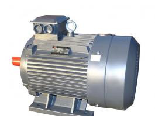

YVFE4西玛高效变频三相异步电动机
产品型号解析：精准识别电机规格
YVFE4系列高效变频调速三相异步电动机采用系统化命名规则，以YVFE4-132S2-2为例进行详细解析：
完整型号结构：
- "YVF"功能标识：变频调速三相异步电动机
- "E4"能效等级：IE4超高效率标准
- "132"中心高度：机座中心高132mm
- "S"机座规格：机座长度规格代号
- "2"铁芯代码：铁芯长度规格代号
- "2"极数标识：电动机极数为2极
该命名体系严格遵循国家GB/T 4831标准，符合国际电工委员会IEC标准规范，确保产品规格的标准化和国际化兼容性。
产品概述：技术创新的变频调速解决方案
技术传承与创新突破
YVFE4系列高效变频调速三相异步电动机基于成熟的YE4系列超高效电机平台进行专项开发，效率达到IE4超高效等级标准。产品在继承YE4系列优良基因的基础上，针对变频调速的特殊需求进行了全方位优化。
标准符合性与技术认证
本系列电动机严格遵循多项国家和国际标准：
- 符合 GB/T 755《旋转电动机定额和性能》要求
- 效率值符合 GB 18613-2020 中的1级能效标准
- 与IEC 60034-30-2标准中的IE4效率等级保持一致
- 通过中国节能产品认证，并进行能效备案
产品兼容与替换性
YVFE4系列电动机具有优异的兼容性能，能够完全取代YJTG、YVF2、YVFE2、YVFE3系列低压变频调速三相异步电动机，为用户设备升级提供便利的替换方案。
核心技术优势与性能特点
电磁设计优化
针对变频器供电特性进行的专业电磁设计：
宽频适应性：
- 充分考虑变频器电源供电对电机的特殊影响
- 保证电机在高频段具有充足的过载能力
- 确保在低频段保持稳定的恒转矩输出
创新的结构设计
散热系统创新：
- 散热片采用平行与垂直交错分布的创新设计
- 结构新颖独特，散热效率显著提升
- 优化的风道设计，确保高效热交换
降噪减振技术：
- 机座、端盖等关键部件经过有限元分析优化
- 整机噪音控制达到行业先进水平
- 振动强度大幅降低，运行更加平稳
轴承系统专业化设计
差异化轴承配置：
- YVFE4-80-160机座号：采用全封闭免维护轴承，使用便捷
- YVFE4-180-355机座号：配备前后轴承注油装置，维护方便
冷却系统保障
采用IC416全封闭带轴流通风机强迫通风系统，专门针对变频调速工况设计，确保电机在低速恒转矩长期运行时绕组温升严格控制在规定范围内。
主要技术性能参数
基本技术规格
工作制式：
连续工作制（S1），适合长期稳定运行
电气参数：
- 额定电压：380V，支持400V、415V、660V、690V等多种电压等级
- 额定频率：50Hz
- 支持定制电压频率参数
功率范围：
0.18kW～315kW，覆盖广泛的应用需求
绝缘系统：
- F级绝缘等级，耐热性能优异
- 优质绝缘材料，确保长期可靠性
专业调速特性
极数配置：
提供2P、4P、6P、8P、10P、12P多种极数选择
调速范围配置：
- 恒转矩调速范围：3-50Hz/5-50Hz
- 恒功率调速范围：50-100Hz
- 支持高频范围定制
性能优势：
- 强大的过载能力，适应冲击负载
- 优异的低速性能，转矩输出稳定
- 宽频域内保持卓越运行特性
安装与防护特性
安装方式：
支持IMB3、IMB35、IMB5、IMV1等多种安装方式
防护等级：
- 标准配置IP55防护等级
- 有效防御灰尘侵入和喷水影响
创新的电机结构与配置方案
灵活的功能扩展
传感器集成选项：
- 支持高分辨率光电编码器
- 可配备精密旋转变压器
- 兼容测速发电机等反馈装置
多功能附件配置：
- 电磁制动器（通电制动/失电制动）
- 齿轮减速机一体化集成
- 按需定制特殊功能附件
人性化接线设计
- 标准配置：接线盒位于机座顶部，接线便捷
- 定制选项：可按要求置于机座左侧或右侧
- 灵活的出线方向，适应复杂安装环境
严格的使用环境条件
环境适应性标准
YVFE4系列电动机设计满足严苛的工业环境要求：
海拔适应：
运行海拔不超过1000米
温度耐受：
- 环境温度-15℃至+40℃
- 适应季节性温度变化
湿度条件：
- 最湿月平均相对湿度90%
- 月平均最低温度不高于25℃
应用领域与价值体现
广泛的行业应用
YVFE4系列高效变频调速电动机适用于多个工业领域：
重点应用场景：
- 风机类负载：智能风量调节，节能效果显著
- 泵类设备：流量精确控制，避免能源浪费
- 压缩机类：压力稳定输出，提高能效利用
- 供暖设备：温度精准调控，优化热力系统
卓越的节能效益
调速系统卓越性能：
YVFE4系列与变频装置构成的调速系统具有显著优势：
节能效果突出：
- 相比传统调速方式，节能效果显著
- 优化的电磁设计降低铁损和铜损
- 根据负载需求调节转速，避免能源浪费
调速性能优异：
- 调速范围宽广，满足多样化工况需求
- 调速精度高，响应速度快
- 宽频范围内保持平坦的效率特性
兼容性强大：
- 可与国内外各类变频器完美配套
- 噪音低、振动小，改善工作环境
智能化控制价值
自动化集成：
- 便于实现智能化调速控制
- 支持自动化系统无缝集成
- 提升生产流程的智能化水平
专业选型与订货指南
选型技术要点
选择合适的YVFE4系列变频电动机时，需要重点考虑：
负载特性分析：
- 负载类型和转矩特性
- 调速范围和精度要求
- 运行周期和负载变化率
环境因素考量：
- 安装环境温度湿度条件
- 防护等级特殊要求
- 冷却条件限制
订货技术要求
标准订货信息：
- 完整的电动机型号规格
- 额定功率和调速范围
- 电压等级和频率参数
- 安装结构形式要求
- 噪声等级（未注明按2级供货）
特殊配置说明：
- 专用传感器类型和规格
- 制动器配置要求
- 减速机参数需求
- 特殊接线盒位置要求
- 其他功能定制需求
所有特殊技术要求需在订货合同中明确标注，并提前与工厂技术部门确认可行性。